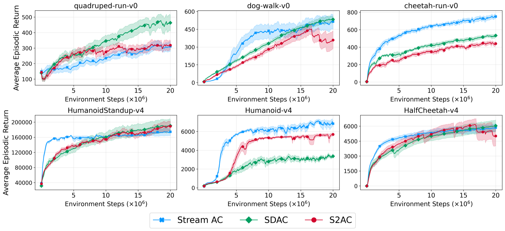
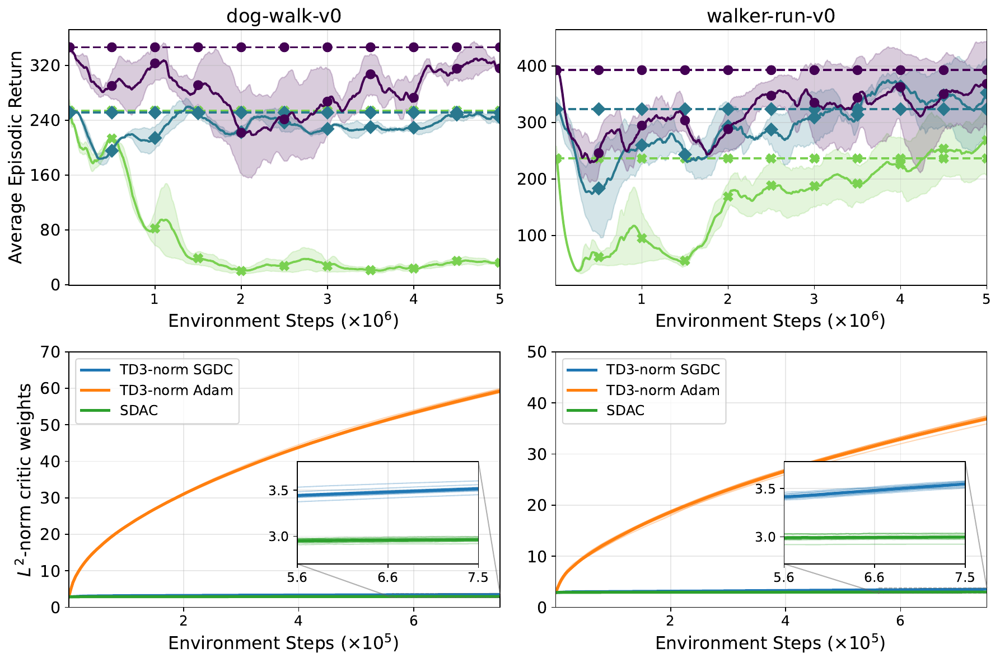
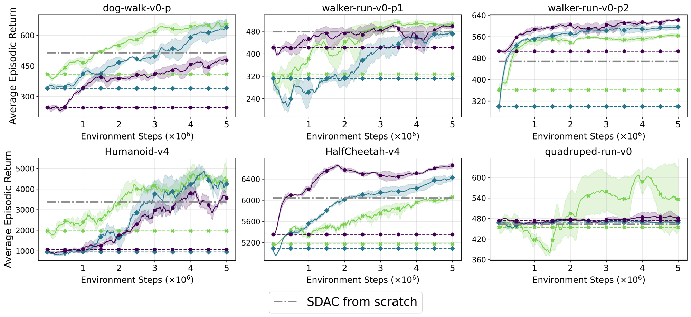

1. Department of Information Engineering, University of Padua (Padova), Italy
* Equal contribution
NeurIPS 2026 Workshop on Reinforcement Learning for Experimental Sciences.
@article{de2026towards,
title = {Towards Batch-to-Streaming Deep Reinforcement Learning for Continuous Control},
author = {De Monte, Riccardo and Cederle, Matteo and Susto, Gian Antonio},
journal = {arXiv preprint arXiv:2603.08588},
year = {2026}
}
State-of-the-art deep reinforcement learning (RL) methods have achieved remarkable performance in continuous control tasks, yet their computational complexity is often incompatible with the constraints of resource-limited hardware, due to their reliance on replay buffers, batch updates, and target networks. The emerging paradigm of streaming deep RL addresses this limitation through purely online updates. Existing streaming methods, however, are studied in isolation, trained from scratch until convergence, whereas on-device learning is most useful as a continuation of a pre-trained policy. In this work, we propose two novel streaming deep RL algorithms, Streaming Soft Actor-Critic (S2AC) and Streaming Deterministic Actor-Critic (SDAC), designed as streaming counterparts of SAC and TD3, with performance comparable to state-of-the-art streaming baselines on standard benchmarks. Building on them, we study the batch-to-streaming transition as a problem in its own right: we show that a naive transition can cause a severe and lasting loss of the pre-trained policy, trace the failure to a mismatch between the optimizers used on either side of the switch, and show that aligning the optimizers enables streaming deep RL in settings such as Sim2Real.
Replay buffers, mini-batch updates and target networks make modern DRL hard to run on resource-constrained, on-board hardware. Streaming deep RL removes all three: the agent learns from a single transition at a time.
Learning from a random initialization takes many interactions, and the erratic behavior of an untrained agent can damage real hardware. Streaming RL is most valuable as a complement to batch methods: pre-train in simulation, then keep adapting on-device.
We target two scenarios: adaptation under the Sim2Real gap, and batch-to-streaming alternation, where a system falls back to a lighter learner because compute must be shared with perception, planning and control.
Mirrors the objective and topology of SAC. The critic minimizes a one-sample soft Bellman residual, with no target network.
Updates use eligibility traces and the ObGD optimizer, with an adaptive entropy schedule $\alpha \leftarrow \alpha_0/\sigma_r$.
Mirrors the objective and topology of TD3, with deterministic policy and action-value critic. SDAC introduces no environment-specific hyperparameters, whereas S2AC needs a base entropy coefficient set per domain.
Both algorithms share the ingredients that make streaming learning stable: sparse initialization, LayerNorm on pre-activations, state normalization and reward scaling.

SDAC, S2AC and Stream AC(λ) trained from scratch. Across twelve environments no method dominates; the ordering is task-dependent.
Matching architecture and objective makes the transfer possible, not
safe. Loading a TD3-norm checkpoint into SDAC can cause the return to collapse
(top-left: dog-walk-v0, green curve), even though the weights are transferred
exactly.
The culprit is the optimizer. The batch critic is trained with Adam, whereas the streaming learner uses ObGD. Adam-trained critics end up with weights of a much larger norm (bottom row) than a streaming critic, so the switch changes the optimizer acting on very different weights.

Top: naive transition (finetuning SDAC from checkpoints pre-trained with Adam). Bottom: critic weight norm for Adam vs. SGDC pre-training vs. SDAC.
We emulate Sim2Real in simulation by perturbing the dynamics of DM Control Suite environments
(reduced joint stiffness and actuator authority, e.g. an ageing animal or a degraded robot), and
study batch-to-streaming alternation on Humanoid-v4, HalfCheetah-v4 and
quadruped-run-v0. Checkpoints are pre-trained with TD3-norm (critic optimized with
SGDC) and finetuned with SDAC.

Each coloured curve is one pre-trained checkpoint finetuned with SDAC; the dashed line of the same colour is that checkpoint's return at the switch. The grey line is SDAC trained from scratch for 20M steps. Shaded bands: 95% CI.
quadruped-run-v0 transfer neither degrades nor
meaningfully improves most checkpoints. S2AC also keeps a per-domain entropy-tuning burden
that SDAC does not.Batch and streaming algorithms need not be treated as independent paradigms. They can be designed around a shared foundation: shared architectures, shared objectives and, as this work shows, shared optimizers.